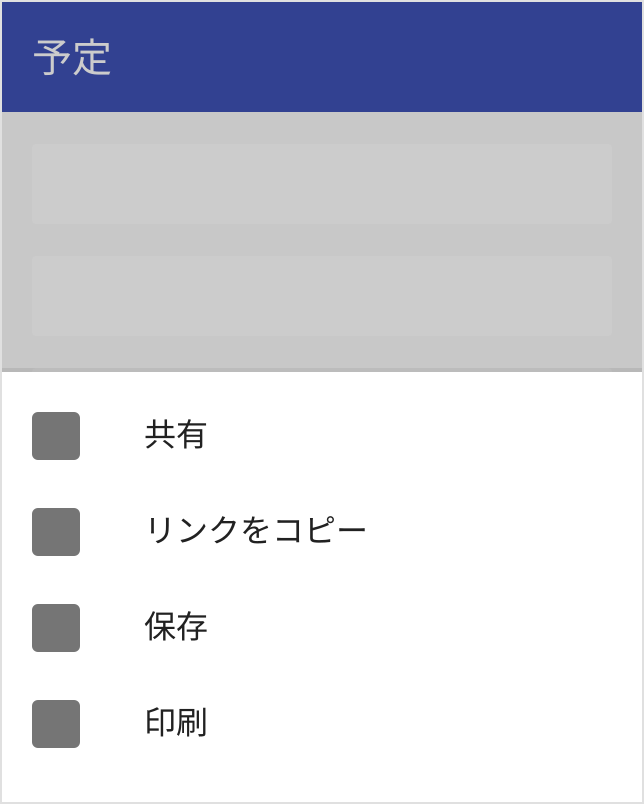

出典 / Source: m1.material.io/components/bottom-sheets.html（2026-11-13 参照）。寸法: 一覧型: 左右 16dp・上下 8dp、項目 48dp、アイコン 24dp、アイコンと文字の間 32dp、背景の幕 20% 黒。下に引くと閉じる・上に引くと全画面。色と書体は M1 の初期値（Indigo 500・Roboto）で KM1 が再描画。/ Redrawn by KM1 from the published specs.